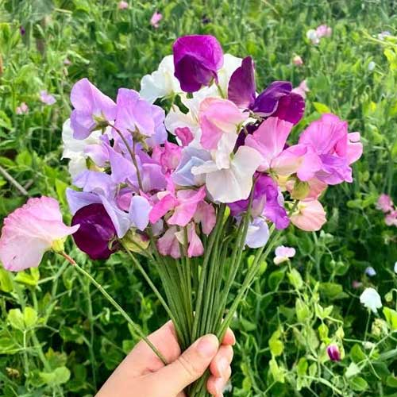

Happy Birthday, My Kuchu Puchu üéâ


Congratulations of Graduating from Teenhood and becoming more WISE
Ecclesiastes 4:9-10 "Two are better than one; because they have a good reward for their labor. For if they fall, the one will lift up his fellow"
Now, now, where should i even start with First of all, i thank GOD for giving you into my life, each day, waking up with the thought that i have someone so lovely who wants me just as i am....with no filters...... to share my life with fills me with the utmost joy, i'll always be grateful to GOD for giving such a greatest BLESSING in my life I'm soo prouddd of you dearrr sweetpea of how far you have come
THANK YOUUUUUUU for being the center piece of my life THANK YOUUUUUUU for your PRESENCE in my life, i really appreciate how you genuinly make time for me, for us, i never thought i'll have someone whom i can be soooo comfortable and open with THANK YOUUUUUUU, for accepting me the way i am, for supporting me in my weaknesses, being there for my lows, being there for my highs.....for not judging me ever I really appreciate you for simply being THERE for me Your constant roasting, uske baad once in a blue moon pyaar..........allla alla kidding i know your each action is filled with love, ichiri porath kanikyan kabhi kabhi bdiyaa arikyum but i know how hard you have trying
Day after day, even when we might have nothing new to say, your consistency here, uski toh daat deni padegi, a full on 10 on 10, ik situations might not be favourable for us sometimes for meeting phsically and all but know this that i'll am always waiting to meet you, to love u, to pamper u, to support you, to take care of you in all the ups & downs of our life, now that God has enabled us for some financial help(our internship), which is another way for me to show how much mean U to meee Trulllyyy i can't imagine life without youuu, a day without talking to u is just no gooood
I don't know what i would have done if you were not with me, i appreciate all the big and the smallest actions u do for me....from helping me win over my temptations to humbling me down when mai zyada uchal raha hu, trulyyy i actually can't imagine how i wud have been able to handle everything without your support
I really appreciate how you try to make our bond acceptable in front of God, even if it means sometimes upsetting me, i realise that it's for the good for us in the long time, and i am sorry for failing in contributing to this aspect sometimes
Speaking of SORRIES, I am SORRRRYYYYYY if i have ever done anything that might have made u feel sad/upset, honestly all i ever want to see is HAPPY and at the best position in life
Kabhi kabhi thoda sa mazhe leletha hu, i mean we both take our turns so ig sorry is not needed for that :) but still kabhi kuch zyadaa beyond limit leliya ho toh maafi mangtha hu AND i hope you do know, no matter what happens, you'll always have a secret admirer, someone who wishes for you to suceed in everything you do!
Sorry to make u read such long things since the only long things that u like are ethekyaa....but anyways looking forward to being your PATNER IN CRIME AND IN JOY and looking forward to create a whole set of memories that will last a lifetime
I didn't realise that i could have a HOME in a person but now seeing how everything has turned out, i can't live a day without saying Thank you to God for giving me such a beautiful person to share my life with and if everything goes well, who knows in the future if i am lucky enough to have you, then i'll get my cuddling panda forever :)
CONCLUDING EVERYTHING - I'm so grateful for your EFFORTS, PATIENCE, LOVE, CARE, SELF-CONTROL :) For being so genuine and self-less, for being a light to this world, for being my reason to face each new day with a smile, for being YOU I'll try my best to lead our friendship in a path where God wants us to go, so i'll need your support to smack me down when i am putting my will over God's will and your's....
I LOVE YOUU ALOTTT, MORE THAN ANY WORDS CAN EXPRESS, AND WHEN I AM WITH YOU, I FEEL LIKE I AM OUT OF THE WORLD
Thank you for being my PATNER in everything
And sorry if ever i failed your expectations, will try my best to live upto them So, othiri emotional varthanam aayi....getting to the main point another year closer to MARRIAGE
Wishing you the best for it, hope God excites you very soon by the concept of marriage just like i am.....
HAPPIEST BIRTHDAY to my KUCHU PUCHU ONCE AGAIN, hope God blesses you with all his blessing
And i hope you'll use your gifts for the GLORY of GOD in everything you do.... And Be the LIGHT of the WORLD
Just a pick-up line that i thought...."I THINK OF YOU WHEN I READ 1 CORINTHIANS - 13"....Let me know how's it :)
1 CORINTHIANS - 13:4-8 4 Love is patient, love is kind. It does not envy, it does not boast, it is not proud. 5 It does not dishonor others, it is not self-seeking, it is not easily angered, it keeps no record of wrongs. 6 Love does not delight in evil but rejoices with the truth. 7 It always protects, always trusts, always hopes, always perseveres.8 Love never fails. But where there are prophecies, they will cease; where there are tongues, they will be stilled; where there is knowledge, it will pass away.
Hope someday we'll be able to love each other just like how Paul describes in 1 Corinthians - 13, will try my best to do so, one more thing to say sorry about , I am SORRY about my possessive nature sometimes, it can be a good thing as well, but over possesiveness is also not that good, so thank you for handling my possesiveness, I do TRUST you the MOST even though it might not be that easy to show it out but yeah so THANK you being there for me
HAPPY BIRTHDAY AGAIN MY BABY PRINCESS GIRL
HOPE THIS DAY, THIS YEAR BRINGS A ALOT OF HAPPINESS IN YOUR LIFE AND MAY YOU BE WHERE GOD WANTS YOU TO BE AND HOPE YOU MAKE YOUR PARENTS AND ME PROUD :) THOUGH WE ARE ALREADY PROUD OF YOU :)
So yeah, one last BIG THANKKKKKKK YOUUUUUUUUUUUUUUUUUUUUUU TO YOU!
Virtual HUGSSSSS AND LOVEEE and hoping to have ice cream with you pretty soon if GOD allows :)
Hope you have all the things that you like on this day, aajkeliye jithna corn khana hain khaloo
Kayapodi or kadukenna ko main aake chupa deta hu ONLY FOR TODAYYY
So yeah rest WALK FAITHFULLY WITH GOD and he'll TAKE CARE OF YOU
And hope you don't forget this small fellow who has typed all the things above :)
Hoping to go with you soon to see the NORTHEN LIGHTS :) if it's in GOD'S will
PROUD OF YOU
WITH LOTS OF LOVE,
YOUR KOKO